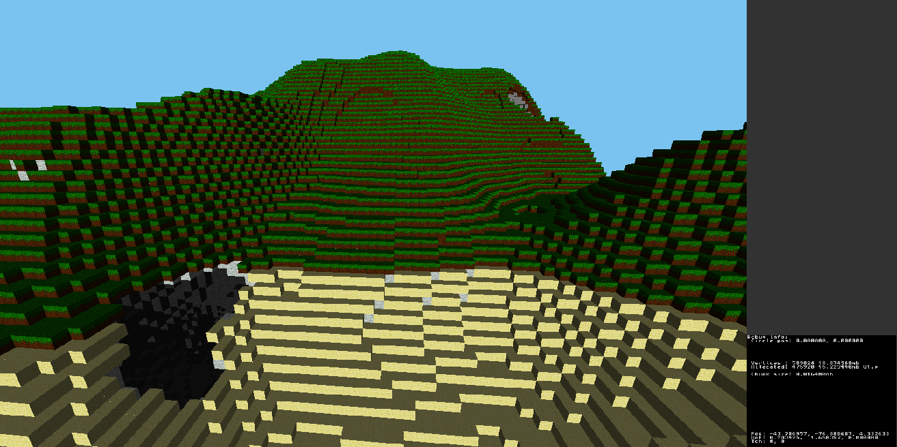
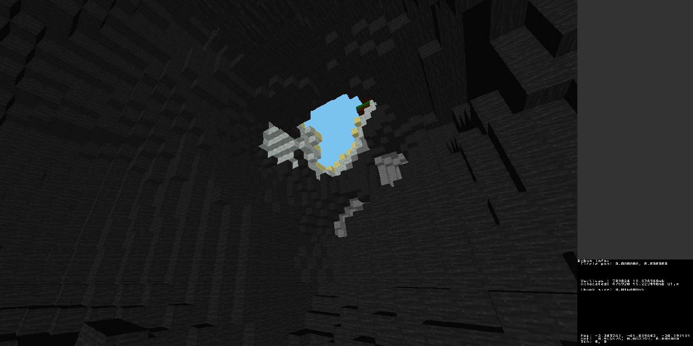
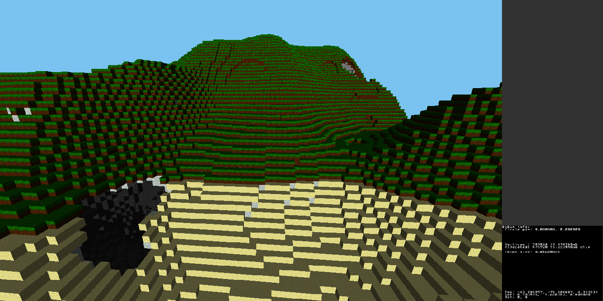
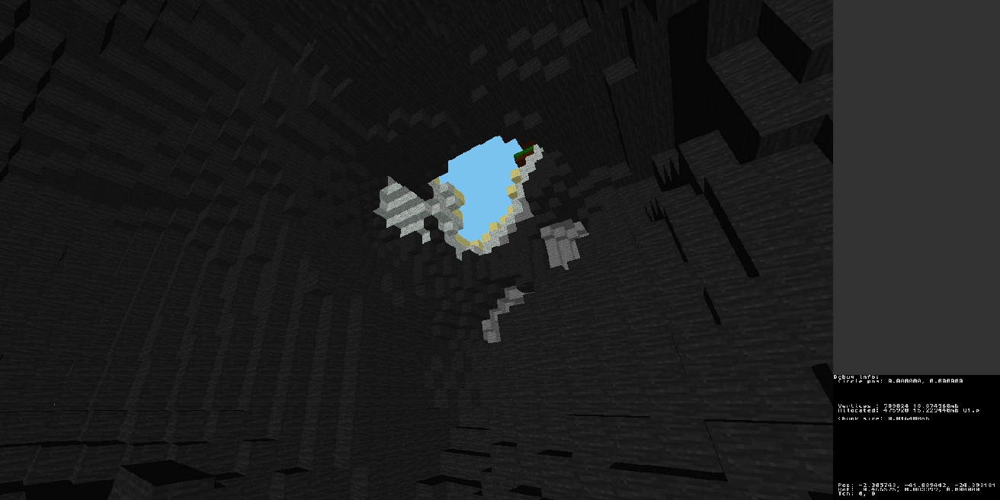

3DS Minecraft Clone
I received inspiration from seeing people online making Homebrew projects for different consoles, and seeing as though I own one myself, I decided the 3DS was a nice
place to start. To take on this task, I first had to learn how to use the 3DS Homebrew Devkit and learned C just for this. Due to already feeling very confident with C#
and Java, this wasn't such a hard task.

In order to make this project, I had to learn how mesh generation works at a low level and overcome limitations of working low-ish level on a system not intended for development. Procedural generation was also something I'm proud of achieving for this project. Theoretically the terrain could be expanded to be infinite very easily, but I've been struggling for time and tackling loading and unloading elements of arrays on the undocumented PICO GPU is a large task I will have to combat later. Updates will be posted as I progress.

The source code for the project can be found at https://github.com/Plokie/3DS-Voxel-gen (On personal acc)

In order to make this project, I had to learn how mesh generation works at a low level and overcome limitations of working low-ish level on a system not intended for development. Procedural generation was also something I'm proud of achieving for this project. Theoretically the terrain could be expanded to be infinite very easily, but I've been struggling for time and tackling loading and unloading elements of arrays on the undocumented PICO GPU is a large task I will have to combat later. Updates will be posted as I progress.

The source code for the project can be found at https://github.com/Plokie/3DS-Voxel-gen (On personal acc)